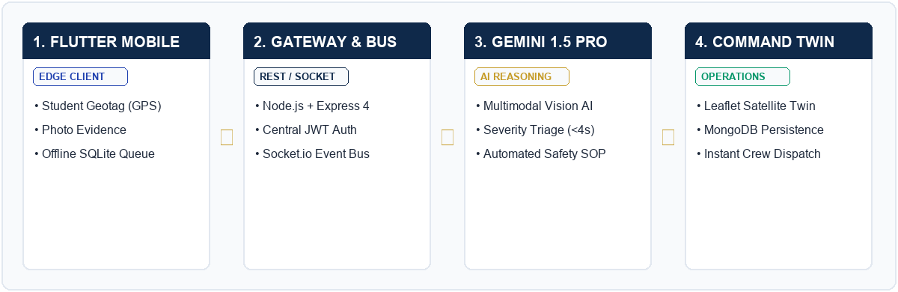

01
ABSTRACT
CampusFlow AI bridges the critical divide between university hazard reporting and immediate facility response. Combining a Royal-Light Flutter mobile client, Leaflet spatial digital twin, Google Gemini 1.5 Pro Multimodal Vision AI, and a real-time Socket.io bus, it autonomously geotags, prioritizes, and coordinates campus safety operations in under 4 seconds with offline fault tolerance.
02
PROBLEM STATEMENT
Modern university campuses lack centralized, real-time spatial intelligence for structural hazards, electrical sparks, and plumbing leaks. Traditional facility ticketing is slow, text-only, and lacks automated severity triage or exact geolocation, leading to delayed repairs, student safety risks, and operational downtime across academic blocks.
03
OBJECTIVES
- 1-Tap Geotagged Reporting: Instant photo capture with automated campus boundary geofencing.
- Multimodal Vision AI Triage: Autonomous classification of category, severity & ETA via Gemini in <4s.
- Live 3D Spatial Digital Twin: Real-time incident beacons & status synchronization over WebSockets.
- Zero-Data-Loss Offline Resilience: Bidirectional local SQLite queue synchronizing automatically when online.
06
TECHNOLOGIES USED
- Mobile Client: Flutter 3.x (Material 3 Dark/Royal-Light), Provider, Google Maps / Leaflet.
- Backend & Bus: Node.js, Express 4, Socket.io Bus, Multer, Helmet, Compression, JWT CAS.
- Multimodal AI: Google Gemini 1.5 Pro API (Vision Triage + Autonomous Safety Copilot).
- Database & GIS: MongoDB Compass / Mongoose, Esri High-Resolution Satellite Map Tile Server.
04
PROPOSED SOLUTION
An autonomous spatial dispatch ecosystem: Students capture hazard photos on Flutter mobile with precision GPS. The Node.js gateway streams the image to Google Gemini 1.5 Pro for zero-latency severity triage, safety advisories, and estimated resolution time. Verified incidents instantly populate the 3D satellite twin for swift facility crew dispatch and automated resolution tracking.
05
SYSTEM ARCHITECTURE / WORKFLOW
INPUT
GPS Geotag + Photo
PROCESS
Node.js Express + Bus
MODEL / DB
Gemini 1.5 + MongoDB
OUTPUT
Satellite Twin + Dispatch

07
QR CODE / DEMO LINK
08
RESULTS & OUTCOMES
- Triage Latency: Sub-4s multimodal hazard classification (vs 2-4 hours manual ticket dispatch).
- Geolocation Precision: Accurate to within 5m across 7 Presidency academic blocks.
- Offline Reliability: 100% incident delivery retention via SQLite/SharedPreferences cache.
- Production Benchmark: 0 analyzer warnings across Flutter & 100% clean production build.
09
FUTURE SCOPE & CONCLUSION
- IoT Sensor Mesh: Acoustic vibration sensors for underground water & gas pipe leak detection.
- Autonomous Drone Dispatch: High-voltage exterior structural inspections & aerial mapping.
- BMS Integration: Direct handshake with university HVAC, power blades, and smart ID cards.
- Conclusion: CampusFlow AI transforms passive university maintenance into a proactive, autonomous safety intelligence grid.